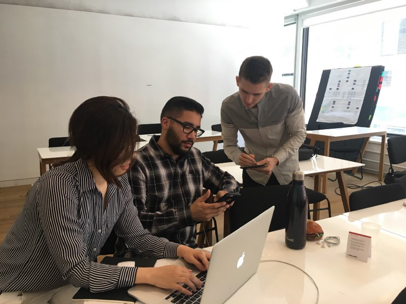

iOS Emergency App
Personal Project | 2017
In an emergency, having the right resources at the right time can be the difference between life & death. Recognizing this long ago, we’ve built emergency resources into the fabric of our societies. Emergency rooms, public defibrillators, the Heimlich maneuver, & the 911 system are all examples of our society’s built-in, life-saving preparation. As technology advances in the 21st century so should our systems of emergency response. With 248 Million Americans now carrying data-connected phones, the developers of those phones have a role to play in helping with emergencies and saving lives. In May 2017, I led a two-week design exploration of how Apple, as an extension of their stated commitment to user health, could build emergency resources & response directly into iOS.
- Company: Honeybee Robotics
- My Role:
UX Researcher
System Designer
Mechanical Engineer
Fabricator
- Timeline: February 2014 - January 2015
- Collaborators:
Honeybee Robotics
NYU Poly
Hospital for Special Surgery
Overview
In an emergency, having the right resources at the right time can be the difference between life & death. Recognizing this long ago, we’ve built emergency resources into the fabric of our societies. Emergency rooms, public defibrillators, the Heimlich maneuver, & the 911 system are all examples of our society’s built-in, life-saving preparation. As technology advances in the 21st century so should our systems of emergency response. With 248 Million Americans now carrying data-connected phones, the developers of those phones have a role to play in helping with emergencies and saving lives. In May 2017, I led a two-week design exploration of how Apple, as an extension of their stated commitment to user health, could build emergency resources & response directly into iOS.
Opportunity
Emergencies, large and small, are a part of living life. Due to their unpredictable nature, emergencies can be incredibly difficult to prepare for. Each emergency is different, requiring different resources for different situations. Preparation for emergencies can often mean planning for every emergency. Thus it it not surprising that studies show that most American do not plan for emergencies until it is too late. [2] We compensate for this lack of preparedness by building preparation into the fabric of our societies and systems. Organizations like police departments, fire departments, emergency rooms & emergency medical services ensure that we can get help in an emergency. Systems like 911 and nationalized emergency hotlines ensure that we can contact and retrieve to those services when an emergency strikes.
For the past 50 years, 911 has been the first and the most important step in accessing resources in an emergency. This system has saved hundreds of thousands lives and will continue to be our nation’s first line of defense when emergency strikes. That said, as technology advances in the 21st century so should our systems of emergency response and the 911 system used today has not advanced since it’s inception in 1967. Although a patchwork of systems exist today to augment the existing 911 system (E911, NG911, etc.) there is no reliable way for a user to transmit anything but their voice & phone number to 911 call centers.
248 Million Americans now carry data-connected phones capable of pin-point geolocation, image & video capture, data transmission, and internet access. The fact that our national emergency response system has not adapted to leverage these technological abilities is disappointing it is jeopardizing lives. Consider the following example:
You are in a car accident on an unfamiliar highway, you need an ambulance and you call 911 from your smartphone. The 911 operator asks where you are but you have no idea. Without knowing your location, the 911 operator cannot send an ambulance. Consider that the device you are using to communicate with 911, knows exactly where you are, accurate to inches, but cannot share that data to the 911 operator trying to save your life.
This technological gap is a tragedy in and of itself. Scenarios similar to this are playing out daily across our country are people are dying as a result. The systems put in place to bridge this technological gap (E911 & NG911) have failed and I believe that the developers of our smart phones have a role to play in filling this gap and an opportunity to help those in an emergency.
History & Context
In 1967, the President’s Commission on Law Enforcement and Administration of Justice under Lyndon B. Johnson, recommended the creation of a single number that could be used nationwide for reporting emergencies. A year later in 1968, the first 911 call was placed in Haleyville, Alabama.
At the time of it’s development, 911 calls were made exclusively on landline phones and could only transmit the voices of the caller and operator. Over time, 911 operators gained special access to the landlines number (Automatic Number Location Information) and billing location (Automatic Location Information), made available by the telephone service provider through the Public Switched Telephone Network (PSTN). This breakthrough allowed 911 operators to send help without the caller having to know and communicate where they were calling from. This system of location was eventually combined with other wireless forms of geolocation to become Enhanced 911 and was mandated in 1999 by the Wireless Communications and Public Safety Act (911 Act). Despite it’s flaws E911 has been effective for decades at locating emergencies and saving lives (especially when calls are made from landlines).
In 2001, the National Emergency Number Association (NENA) marking the prevalence and enhanced capabilities of new cellular phones published its plans for Next Generation 911 (NG911). The new system would greatly augment the current 911 system base on current and developing technology allowing callers to transmit text, video and other data to 911 call centers. Unfortunately, the implementation of NG911 depends on mandating change within an absolute spiderweb of different intertwined stakeholders & technologies from different massive telecom companies to state & local 911 agencies. Unsurprisingly, this massive undertaking is slow moving and shows no sign of completion despite launching in 2003. Acknowledging the lack of national progress, several states have implemented their own statewide NG911 system in the intervening years.
Despite this meager progress in recent years, the broken, patchwork system remains and is routinely failing Americans when they need help the most.
Why iOS? Why Now?
Early in our process, after examining the issues with the current 911 system, we established a simple, guiding problem statement:
How might we help people during an emergency?Although it was tempting to just design a generalized mobile ‘Emergency App’ for the Google Play or App Store this presented an obvious issue; as cited before, Americans do not prepare for emergencies until it is too late [2] and thus they would be unlikely to download and utilize the app in an emergency. To be truly effective, our solution would been to be embedded directly into the systems we already use and on the devices we already carry (much like 911 is built into every telephone). Integrating directly into an mobile operating system was the obvious answer. The question then became, which operating system?
For several critical reasons we chose iOS:
- US Market Penetration. There are 85.5 million mobile devices running iOS in the United States.[3]
- Hardware & Software Consistency. All hardware running iOS comes equipped with the necessary technical capabilities for NG911 (reliable geolocating, etc.). Additionally, roughly 90% of iOS users are running the latest OS version at any given time. (Compare this with Android at only 33%) [4]
- Apple’s Commitment to Health. In recent years Apple has gone above and beyond in its commitment to user health. Beginning with the introduction of the Health app in 2014, Apple has debuted a series of applications and hardware features geared at helping its users tack and maintain their health.
Research
Our project began with a simple, guiding problem statement: In states of emergency, information is vital and often difficult to access. How might we help people during a state of emergency? When our team crafted this statement we had actually envisioned helping people during the ‘states of emergency’ that attract national attention and news coverage: natural disasters, terrorist attacks, etc. Despite these initial assumptions about who and how we might be helping, we set them aside and allowed solid research to reshape our assumptions, guide the evolution of our challenge and the design of our solution.
User Research
We began our research phase by talking to people about their experiences in times of emergency. Over the course of two days, we conducted 23 in-depth user interviews with a demographically balanced set of potential users. Users were not screened on any particular criteria because (unfortunately) emergencies impact everyone. Although we asked questions about many different things (and often let our users’ answers guide our line of questioning) we were most interested to know about the circumstances of the emergency in detail and the response of those involved. Our notes quickly filled up with detailed accounts of disaster, disorder, & the decisions made in dire circumstances.
After conducting our user interviews we gathered our notes and synthesized the data using affinity mapping. Although there were many valuable patterns that emerged, one of those patterns jumped out and would reshape our project significantly. We found that very, very few people had stories to tell about the natural disasters and terrorist attacks we had initially envisioned. When we asked people about times of emergency, they reliably recounted stories (as either victim or bystander) of accidents, personal injury and personal medical emergencies. Despite our initial assumptions about our focus being on ‘collective emergencies’ (natural disasters, etc.) our user research was pointing us at more ‘individual emergencies’ that were both more common and similarly important. Further research revealed that natural disasters kill less than 400 Americans each year [5] while personal emergencies deaths total in the hundreds of thousands. Heart attacks alone claim 610,000 American lives annually. [6]
This revelation, brought on by our research, caused us to significantly shift our focus, from collective disasters to individual emergencies. This pivot would bring a new set of opportunities and challenges but before we could begin exploring them we wanted to know what other solutions currently exist to help people in states of emergency.
Competitive Analysis
We began our competitive analysis by researching and analyzing all available sources for resources in an emergency. Since we did not seek to replace or compete with the existing 911 infrastructure and we did not find any native emergency response features in mobile operating systems (beyond 911 calling abilities), we eventually came to focus on currently available mobile applications focused on emergency response. Of the 23 applications found we focused on a subset of nine that we found most relevant: Gaurdly, ICE Standard, Siren GPS, Disaster Alert, ARC-Emergency, ARC-First Aid, Red Panic Button, Life360, & FEMA. We sought to understand each of these applications, how they functioned and how exactly of they provided value to the user. We took these solutions and compared them with our user research to better understand areas of opportunity.
Comparative Feature Analysis
To get a better sense of competitor’s solutions we conducted a comparative feature analysis, examining 20 features across each of our nine platforms. These features included both general information (e.g. what languages were natively available) and more specific features like notifications/alerts/reminders systems. The resulting spreadsheet (pictured below) allowed us at a glance to understanding what features were being offered different solutions. While this understanding would be helpful for us moving forward, we were careful not to simply implement all the useful features we identified but rather let our user research guide what would be most effective for our solution.
Technical Research
In addition to our competitive research we also conducted some preliminary technical research to understand the systems and technology available to us. The majority of our research conducted focused on our nation’s existing emergency response systems, detailed here in the Opportunity section above. In addition to understanding those systems we spent time researching existing APIs that could connect us with with valuable relevant information. Our shortlist of APIs included: the Gaurdly API, the Pitney Bowes Geo 911 API, the Data911 APPI, the NOAA API, the NYC311 Content API, & the Red Alert API. Understanding these resources would be essential when assessing the technical feasibility of our solutions in the design phase.
Synthesis
Although a significant amount of synthesis was conducted in tandem with our research, we made efforts to distill all of our research into more tangible research representations that could guide our design process moving forward. Primary of these representations would be two user personas and a finalized problem statement.
It is never easy taking a myriad of observations from research and distilling them into valuable findings and insights. To make this process easier we employed collaborative affinity mapping. Individual observations from each of our user interviews was collected and written down on a sticky note. These observations were gathered together into clusters based on their content. These collections of observations began to represent more substantiated ‘findings’ (eg users often have a difficult time describing their current location to 911 dispatchers & emergency services). These findings were further synthesized into actionable insights (eg providing accurate location information to users will better connect them to emergency services).
Persona Generation
Using our observations, findings, and insights as a foundation we sought to build personas that would bring our research to life and make our users more tangible and understandable. We began by collecting the relevant information into five critical categories: biographical info, behavioral info, desires/wants, pains/frustrations, & needs. Because we were dealing with a expansive & diverse potential user base of 85.5 Million [3] (just within the US) we bifurcated this information into two different personas that could represent two different walks of life. These two personas would be able to better represent the different demographics (generation, gender, living environment, socioeconomic status, tech savvy, etc.) while being true to our user research. Our first persona (Scott) is an young, wealthy, financial analyst, who lives in a major city. Our second persona (Suzanne) is an older, lower-middle-class, art teacher, who lives in a small rural town. We considered both of these personas to be ‘primary’ and their needs were given equal consideration as moved through the design phase.
Revised Problem Statement
To conclude our research phase we came back to our original problem statement to hone its scope and focus:
In times of emergency, health resources are vital and often difficult to access. Using iOS11 as our primary tool, how might we help people during an emergency?*iOS11 had debuted at WWDC’17 during our research phase. We we’re excited to expand upon the new features and design language built into the new OS.
Design Process
It is one thing to design an application to run on iOS and quite another to design an application to directly integrate with iOS. We knew from our research that direct integration was the right decision but we also recognized that it would bring new challenges and some critical considerations. Along with the ideation and feature prioritization we conducted, we wanted to know iOS inside and out. More specifically, we wanted to be experts on the new iOS11 (which had debuted just two days earlier) and to Apple’s Human Interface Guidelines (HIG) which governs the iOS design ethos. To better understand this system and how our solution would integrate into it, we would develop an app map, along with user & task flows; but first, we needed to get our ideas out of our heads and onto paper.
Ideation
Using our research as a guiding force, we began our design phase with an intense ideation phase. Our goal was to leave no potential solution or feature unconsidered as we moved from the conceptual to the concrete.

Design Studio
We began our ideation with an intense brainstorming exercise sometimes called Design Studio. Design Studio is team-based, time-boxed ideation technique designed to flush out as many ideas from the group as possible. When conducted well, the exercise can be incredibly effective at not only producing potential solutions but getting every member of the team on the same page.
Although there are different ways to conduct a Design Studio, each contains several rounds and these rounds consists of two distinct, time-boxed phases. In the first phase, every team member silently sketches out as many possible ideas as possible within the allotted time (typically 5 minutes). In the second, each team member takes a turn “pitching” their ideas to the group (2 minutes), and in turn, receiving feedback from each member of the group (1 minute each). Rounds are repeated to give each member a chance to improve upon the group’s ideas and are sometimes convergent, where each team member will focus on details of one particular solution. When conducted correctly, this produces a genuinely astonishing number of ideas & insights; this was the case for our team.
Feature Prioritization
The result of a well-conducted design studio can be an overwhelming number of concepts, ideas, & features. Equally important to generating these ideas can be prioritizing them for further exploration & integration. After conducting our design studio we quickly but carefully documented all the ideas/features generated and prioritized them using a modified MoSCoW method.
For those unfamiliar, the MoSCoW method is a way of prioritizing features typically conducted when planning a MVP. Following this method, we graded each feature on its potential value (to our users) & implementation difficulty (both in design & development) and then mapped them onto a corresponding X & Y axis. The result was four categories of features: must haves, should haves, could haves, & won’t haves (this is where the MoSCoW method gets it’s name).

These prioritized categories, derived from the needs of our personas, would serve as a guide as we began designing our solution.
Flows & Maps
Although it would be revised and refined frequently throughout the design process we first developed a user flow of the entire system. This allowed us to come together on how we envisioned the system integrating into the native OS and how users might move through the application.
Once we had a rough version of our user flow in place, we created different task flows for each of our two personas. These task flows were vital in helping us understand how our potential solution would connect with the real needs of our different users.
With our user & task flows in place, we created an application map for our solution. Although the map would also be revised along the way, it allowed us to see the basic structure of our solution and served as and a roadmap as we began creating wireframes.
Critical to our solution would be ease of access. Early on in the development of our flows we examined all the possible entry points for the application. We knew that integrating into iOS would provide more points of access than other applications.
Style Guide
We understood that by integrating directly into iOS11 we would need to be extremely considerate of the functional and style specifications put forth by Apple. This was not simply a matter of brand consistency. By adopting and seamlessly integrating with the native iOS design language we could increase familiarity, learnability and ultimately the usability of our solution. To ensure adherence to Apple’s latest look and feel we created our own style guide. Although minor edits would be made throughout, this style guide would serve as the backbone of our visual design language, allowing us to create a novel solution within an existing (and effective) design language.
Collaborative Sketching
We began our design process in earnest with some collaborative sketching. Using Brad Frost’s Atomic Design as framework we worked together to understand how the features we were considering would best combine into screens and how those screens would best combine into an application. Sketching together allowed us to talk through the positives and negatives of different designs and quickly come to a shared understanding on the specifics of the solution.
Wireframes
Once on the same page, we jumped directly from hand sketches into high-fidelity wireframes in Sketch. We decided to skip intermediary, greyscale wireframes for several reasons. First, working within the well defined design language of iOS11 we did not see the need for a lengthy visual design exploration. Most importantly, we recognized that our usability testing would be most accurate with high-fidelity wireframes that closely resembled a final application (than with their grey counterparts). The result was 36 unique screen designs, representing all five possible entry points, and three distinct task flows that would be used in our usability testing. More detail about the screen designs can be found in the final solution section.
Prototyping & Testing
Although we felt confident our designs would effectively help our users, we had no proof it would. As a designer & an engineer, I believe that assumptions should be validated and designs should be tested before implemented. We sought to validate our proposed solution by creating a mobile prototype in InVision and conducting several rounds of usability testing.
InVision Prototype
With our initial round of wireframes completed we sought to test the efficacy of our designs with real users. We imported our designs from Sketch to InVision using Craft and created functioning mobile prototype. Although our original prototype has been replaced by more recent versions you can access a version below. (*not final)
iOS Emergency App v3.2*Usability Testing
Our goal in usability testing was to gain valuable, actionable insights on the usability and utility of our proposed solution. To do this we arrange controlled usability tests with seven users of different demographic backgrounds. Although there were scripted introductory remarks, preliminary questions, and concluding questions, our usability tests centered around three scenarios & tasks given to the user:
- You are walking with your uncle. After complaining of chest pain your uncle collapses to the ground struggling to breathe. He appears to be having a heart attack.Using your phone, get him help.
- You’ve successfully called 911, help is on the way. Using the emergency app find out how you can help your uncle while you wait.Using the emergency app, find out how you can help your uncle while you wait.
- While moving apartments, your friend slams his finger in your car door and breaks it. Using the Emergency app,find a hospital and navigate your way there.
In the first two scenarios, the user is situated at a simulated lock screen outside of any application and must find their way to a solution through the natural iOS environment. In the third scenario, the user is situated at the home screen of the emergency app before given their task.
To better gather data and insights data from these tests, all three group members were present for each test. One member would administer the test; setting & reseting the prototype, asking questions, and giving the user their scenario & task. One member would observe and take notes and the final member would observe and record the user’s actions on video for later reference. Permission to record was always given ahead of recording. Participants were screened on only one criterion: iPhone ownership.
To better simulate the elevated stress levels of an emergency situation, users were given these scenarios & tasks in the rushed, exasperated tones of someone panicking and occasionally prompted with pressuring statements like, “He’s depending on you! Quickly!”
Findings
The notes and recordings from our usability testing sessions were synthesized for insights using the same process of affinity mapping described earlier. Insights were initially separated into two primary categories, those concerning usability and those concerning utility/usefulness. Our team debriefed on both categories, to better understand what went wrong, what went right and how we could improve both in our next iteration.
Since the prototype leveraged many of Apple’s familiar design conventions, the application performed as anticipated in the hands of the user and usability issues were minor. Among our most important usability insights, were simple issues with insufficient contrast (making our icons difficult to see when inactive) and confusing/inconsistent copy from screen to screen.
Our most significant findings were in the utility and usefulness of our solution. We were encouraged to see that (with the exception of Siri activation) all five entry points into the emergency app were utilized in our limited testing. This seemed to validate our assumption that multiple entry points would connect people more quickly to the emergency resources. Unsurprisingly many users instinctively called 911 immediately when in a life or death emergency (simulated in task #1). To my mind, this is a great thing and not something we would want to change or interfere with. We have felt from the beginning that our role was to augment our current emergency response system and not to replace it. Seeing how people actually use the system gave us concrete ideas on how we can better improve and augment the system.
For example, we had not considered integrating directly into the 911 call screen until we observed a user act out a 911 call. PSAP operators are trained to ask two questions at the beginning of every 911 call: What is your emergency? What is your location? Putting the user’s exact location information directly into the call screen would allow the user to quickly and accurately describe their location so that 911 operators can quickly and accurately dispatch emergency services. In our solution, a user unable to speak or understand the location information, can share their location directly with 911 by tapping “Send My Location with 911”. You can read more about this feature in the Enhanced 911 portion of the Final Product section below.
All told, we found our usability testing extremely valuable and would like to do more in the future to hone our final solution.
Final Product
Our goal for this project was to get critical resources into the hands of people in emergencies and to augment the emergency response systems already saving lives. We understood (based on our research) that to do this most effectively, we needed to integrate these resources directly into a platform millions of Americans were already using. We chose to directly integrate our solution directly with iOS11 as an extension of Apple’s commitment to user health, exemplified by Apple’s Health app. While the native Health app might prevent death by long-term health risks (heart disease), we imagine the native Emergency app might prevent death from immediate health risks (heart attack). We believe, based on our research & our design validation, that if implemented this solution would help people in times of emergency & potentially save lives.
Affordances
At the most general level, our Emergency app simply is a combination of five affordances that can be critical in times of emergency:
- The ability to find and share your exact location with others.
- The ability to find the nearest, open hospital or medical center.
- The ability to quickly access to an expanded Apple MedID profile.
- The ability to access to critical first-aid information on a range of potential medical emergencies.
- The ability to share precise location data with 911 while on the call.
Access Points
Access to these critical resources is made easy by integrating them into 6 locations within iOS. Users can access emergency information from:
- The Springboard - by either launching the Emergency App or using 3D touch to access the most critical features.
- The Control Center - by either launching the Emergency App or using 3D touch to access the most critical features.
- The Search Screen - by using the Emergency widget in its collapsed or expanded form.
- The Emergency Call Screen - by tapping on the Emergency App text in the lower left hand corner.
- The 911 Call Screenby tapping on the ‘Location’ or ‘Emergency’ buttons added to the call screen (replacing the mute & number pad).
- Siri Voice Activationby simply saying “Siri, it’s an Emergency.” We imagine future iterations would have a custom Siri navigation system specifically for emergencies.
1. Location Sharing
The ability to find and easily share your location with others.
Although it might not seem obvious, the ability to reliably know and accurately communicate your location in an emergency is incredibly important. It might seem trivially easy to those in a familiar place but there are many times when we simply do not know exactly where we are or can’t describe where we are. Additionally, the circumstances of the emergency can complicate or compromise this ability if you are injured, stressed or in shock. At the most basic level you need to be able to communicate to 911 where you are so they can send help, in less dire circumstances you may need share your location to a caretaker or loved one. Geolocation vs Street Location.
2. Hospital Locator
The ability to find the nearest, open hospital or medical center.
Equally important to contacting emergency medical response can be getting to an emergency medical center if you are able. With one touch the Emergency app allows you to locate the the nearest emergency medical center and navigate there. Our maps & navigation systems would leverage the full abilities of Apple Maps without leaving the Emergency app.
3. Another Home for MedID
The ability to quickly access to your Apple MedID profile.
Accessing your own medical information and your emergency contacts can be vital for users and the first responders that treat them. Apple recognized this and implemented Apple MedID years ago with the launch of iOS8. MedID currently lives in the Health app but we feel another useful home would be alongside other vital information in the Emergency app. In addition to all of the vital information in MedID, we have taken the emergency contact info and copied it into the Emergency home page for easier access.
4. "How To Help"
The ability to access to critical first-aid information on a range of potential medical emergencies.
In addition to the resources above, which are designed to augment our current emergency response systems, we’ve included a feature called “How to Help”. How to Help connects the user with valuable first-aid information on a variety of potential medical emergencies so that they can better understand and act should these situations arise. If someone appears to be having a seizure, how do you know & what should you do to help? This system is not designed to replace a call to 911 (and says so) but through our research we recognized many situations where this information would be helpful and potentially life saving. At the moment such information is reliant on uninformed internet queries and requires a stable internet connection which may or may not be available. This system of information would be vetted by medical professionals and accessible at the touch of a button without an internet connection. Not being medical experts ourself we pulled our information for this iteration from the American Red Cross and emulated how they instruct people to act in different emergency circumstances.
5. Enhanced 911
The ability to share location data directly with 911 while on the call.
In our usability tests we observed that users consistently navigated to 911 first for help in an emergency. We see this as a great thing and do not want to change or interfere with that instinct or that system. But we believe there is an great opportunity to augment that experience using iOS.
Every 911 PSAP operator is taught to ask two critical questions as soon as they pick up the phone: “What is your emergency?” and “What is your location?” This is the most critical information to give a 911 operator so that they can get you help. Unfortunately, there are many scenarios where you simply do not know where you are or you cannot communicate that information for one reason or another (e.g. you’re somewhere unfamiliar, you don’t remember due to injury or trauma, you don’t speak the native language, etc.). We’ve attempted to solve this by integrating that information directly into the 911 call screen. When you dial 911 by any means, your iPhone detects the emergency call and goes into a special emergency mode. Two new buttons are present on the screen replacing the mute & dial pad buttons: Location & Emergency. Tapping on the Location button reveals a My Location action sheet displaying your nearest street address and your geolocation in latitude and longitude. We anticipate geolocation being critical in rural and wilderness emergencies (e.g. hiking). If you are unable to read or relay that information with your voice, Siri will do it for you. Tap “Send My Location to 911” and Siri will interrupt the call temporarily while she reads your location aloud to the 911 operator. You can stop or mute this transmission at any time.
Failing to accurately communicate you location to 911 in an emergency can be the difference between life and death. This subtle addition to the 911 call screen could make a huge difference. It is our hope that this simple feature would be so effective that it would be requested by the 911 operator, added to their training, and even federally mandated for all smart phones as a life-saving feature.
Future Steps
Although we feel proud of our research & our solution there is still much more we would like to do. Constrained by time and the resources of our small team we did not get to design or implement everything we would have liked. In the future we would like to:
- Continue usability testing our current solution and iterate more on the product detailed here.
- Conduct a contextual inquiry with an 911 PSAP operator & an EMT to get a better understanding of how we can help them. We did conduct an interview with a licensed EMT which was helpful.
- Explore how our solution (which focused on helping people in America) could be expanded throughout the world This would begin with translation and understanding what unique challenges each country faces but might require tailoring the system to each country’s national emergency response system.
- Integrate better with and expand to WatchOS. Although we chose the iPhone as our primary platform, there is every reason to expand to the Apple watch. In addition to providing the same critical resources, we believe there are significant new opportunities, given access to user biometric information like heart rate and facial expression.
- Explore how (in addition to helping people in emergencies) we could help people cope with traumatic emergencies. This could include integration with WatchOS’s native Breathe app or heart rate monitor.
Although there is much work to be done if this project is ever to be implemented, our team feels proud of the work we’ve done here to start that process. We believe — based on our research & our design validation — that if implemented, this solution could truly help those in emergencies & potentially save lives.